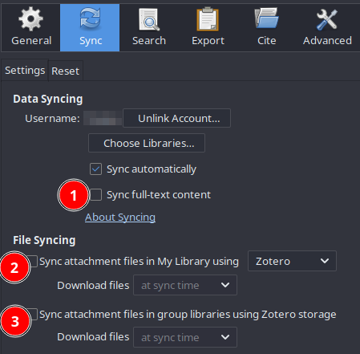
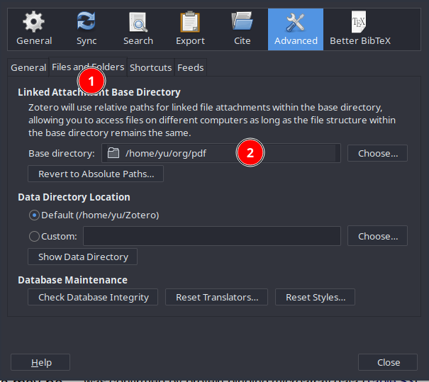
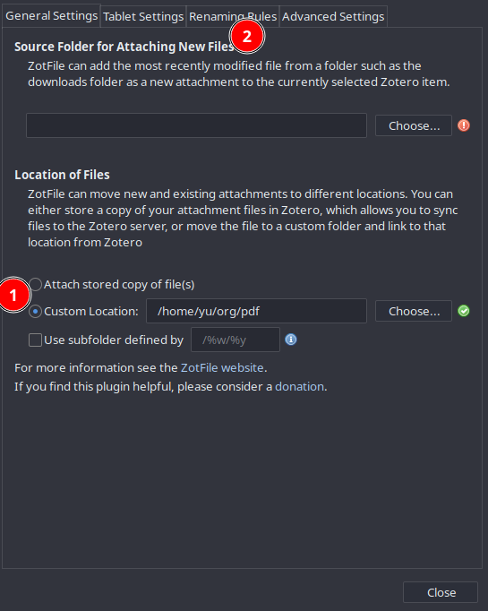
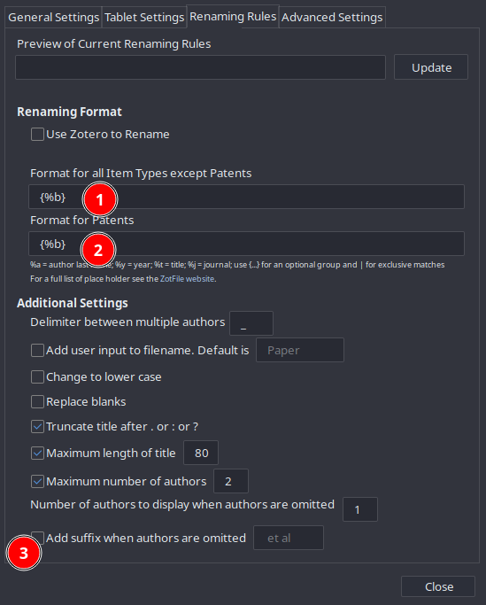

Syncing Zotero with cloud storage like Google Drive
Table of Contents
Zotero is an amazing tool for literature management (and more) — a free and open-source software (FOSS) that enables much more flexibility in my workflow than, e.g. Mendeley.
I work on multiple PCs and need to sync the metadata and the PDFs of literature between them. Zotero provides 300 MB free storage for each user, which is enough for syncing metadata but not PDFs. They provide subscription plans (e.g. 2GB storage for $20/year), which is a reasonable price, and more importantly, by subcription we support the development of Zotero.
However, for students who have no income but free Google Drive-like cloud storage by the university, it is possible to sync metadata via Zotero and the (bulky) PDFs via another cloud storage. Tom Saunders used to have a step-by-step blog post about this, but his blog is currently not available. So, I decided to re-write one, largely based on what he has done.
1. Installing ZotFile and Better BibTeX
This workflow requires two amazing Zotero add-ons: ZotFile and Better BibTeX.
Download the .xpi files.
To install the add-ons, go to Zotero’s Tools menu and select Add-ons.
In the new dialog, click on the “gear” button and choose Install Add-on From File... and choose the .xpi file.
Restart Zotero after installation.
For Firefox users: Firefox’s add-ons are also .xpi files, which means if you left-click the link to download, Firefox will ask if you’d like to install the add-on, but provide no option to download the file.
To circumvent this issue, right-click on the link and choose Save link as....
2. Go to Zotero’s preference dialog
Go to the Edit menu at the top and choose Preference.
In the new dialog, choose Sync and register/log into your Zotero account.
After login, the dialog should look like this:

Follow the step numbers in the screenshot to untick those boxes.
Then go to Advanced, and then the Files and folders tab, here we’ll need to choose a base directory of the attachments (i.e. the PDFs).
Choose a custom location — this folder will be the folder to be synced via a non-Zotero cloud storage, which stores all PDFs.

3. Go to ZotFile’s preference dialog
Go to the Tools menu at the top and choose ZotFile Preferences....
The new dialog should look like this:

Enter the same custom location as previous, and then go to Renaming Rules and change the following:

where {%b} means the PDF names are decided by the cite keys generated by Better BibTex.
Now, Zotero should sync metadata via its own cloud storage but store the PDFs locally. You should set up another cloud storage to sync the folder containing the PDFs. Repeat this process on another PC and you’ll get the library synced on both machines!